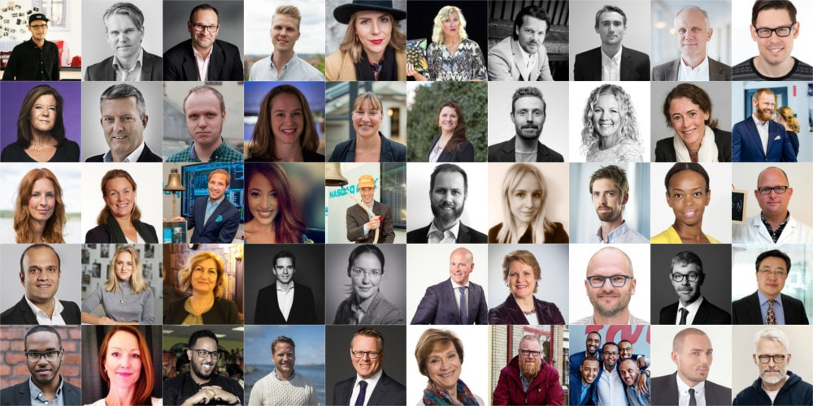

Some of all the tech and startup superstars that will attend #gbgtechweek.
This is the tech and startup elite that will attend #gbgtechweek
#gbgtechweek is organised for the third time in Gothenburg, and it is not only more events than ever, the traction from the elite within tech and startup has increased. Some of Sweden’s and Europe’s most successful entrepreneurs, investors, and corporations will join #gbgtechweek to inspire and teach the visitors.
“Attracting these people does not only make the events more interesting for the visitors, but it shows that #gbgtechweek is one of the leading events within tech and startup in Sweden and Scandinavia.” - Andreas Rolén, Organiser of #gbgtechweek
The non-profit organisation #gbgtechweek organise the week together with more than 25 organisations in Gothenburg. Together they organise more than 90 hours of tech and startup events, where the tech and startup elite will attend jurys, panel discussions, lectures and many other types of events.
These are some of the tech and startup stars that will attend #gbgtechweek:
- Haider Abdo - Founder & CEO, Returnado
- Ali Ahmadian - CEO, Heliospectra
- Lena Apler - Founder & Chairman, Collector
- Sofia Appelgren - Founder & CEO, Mitt Liv
- Jonas Arvidsson - Co-founder & CEO, Parakey
- Magnus Björsne - CEO, AstraZeneca BioVentureHub
- Karolina Brorsson - Managing Director, Protosell
- David Brudö - Co-founder & CEO, Remente
- Thomas Brue - CEO, Pegroco Invest
- Per Cramer - Dean, School of Business, Economics and Law
- Måns Danielsson - CEO, Mat.se
- Gusten Danielsson - Co-founder & CFO, Cellink
- Håkan Ericson - CEO, GU School of Executive Education
- Magnus Emilson - Chairman & Investor, NA-KD
- Catarina Englund - Sustainability Innovation Manager, IKEA Group
- Sandy Errestad - PR & Comms Lead, Minc
- Åsa Gisel - Marketing Manager, Orkla Foods
- Charlotta Gummeson - CEO, Sahlgrenska Science Park
- Moa Gurbuser - Founder & CEO, MRG Wines
- Zakaria Hersi - Founder, Orten.io
- Niclas Holmberg - Managing Director, Nasdaq
- Mats Hård - Founder & CEO, Finwire
- Anders Jansson - Former Co-founder & CEO, Minesto
- Päivi Juolahti - Director Renewal, Fazer Group
- Carl-Magnus Kindal - CEO, Göteborg Corporate Finance
- Ariel Kramer - Communications Officer, Cellink
- Oxana Kukhaneva - Venture Partners, Seventure Partners
- Linnea Lindau - CEO, Chalmers Ventures
- Johan Ljungberg - Partner, Mannheimer Swartling
- Fredrik Moeschlin - Head of Analytics, Findwise
- Pontus Ottosson - Head of Investment, Chalmers Ventures
- Ted Persson - Design Partner, EQT Ventures
- Johan 'Red Top' Larsson - Owner, Pustervik
- Karin Reutersköld - Sustainable Business Strategist, DanskeBank
- John Sjölander - Venture Partner, Industrifonden
- Kerstin Stenberg - CEO, Connect Väst
- Björn Stansvik - Founder & CEO, MentorMate
- Yosef Mohamed - Co-founder & CEO, TransferGalaxy
- Anna Urombi - Co-founder & CEO, AddTruly
- Jarno Vanhatapio - Co-founder & CEO, NA-KD
- Marie Wall - Deputy Director Startups, Ministry of Enterprise
- Nicholas Waters - CEO, IRLAB Therapeutics
- Gang Wei - Deputy CEO, CEVT
- Samuel West - Curator, Museum of Failure
- Oskar Wollert - Head of Listings, AktieTorget
- Klementina Österberg - CEO, GU Ventures
To get more information and sign up for the events, visit https://www.gbgtechweek.com, and join the Facebook event: https://www.facebook.com/events/247951215669939/
Facebook: http://facebook.com/gbgtechweek
Instagram: http://instagram.com/gbgtechweek
Twitter: http://twitter.com/gbgtechweek